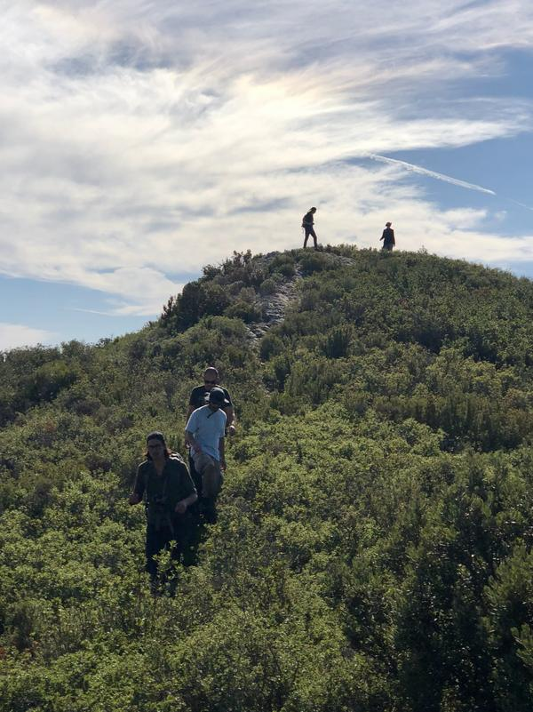
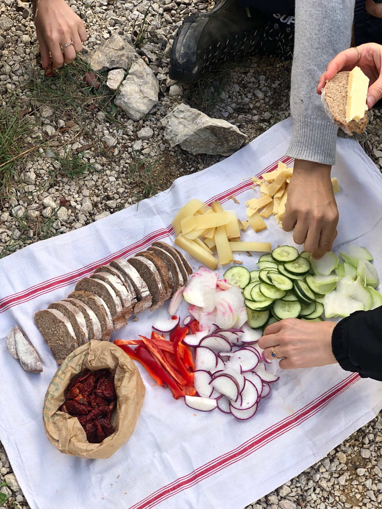
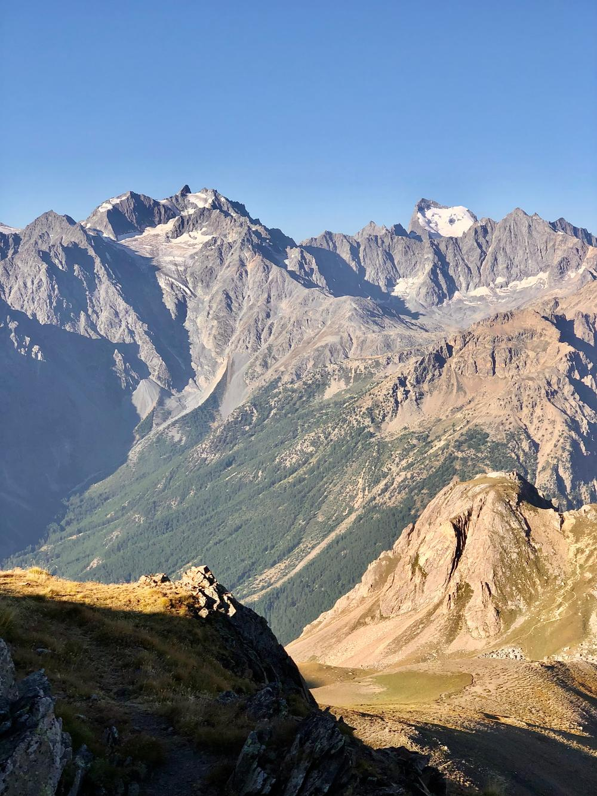
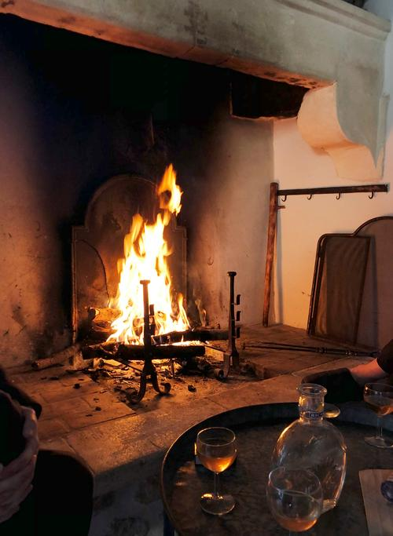
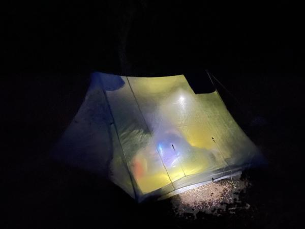

marcher, prendre le temps,
faire un bout de chemin ensemble.
traversées, ce sont quelques jours à pied, à habiter le paysage. Des marches sur mesure pour découvrir un territoire, partager une table et laisser une place à l’imprévu.
Artiste et accompagnateur en montagne diplômé d’État, j’ai une grande expérience de terrain, notamment avec des agences reconnues comme Voyageurs du monde, Terres d’Aventure, etc… Une expérience que je mets au service de votre marche, et de vos envies, pour un séjour unique— Ruben Brulat





Alpilles · Écrins · en France · ou plus loin
une envie de partir,
un chemin à inventer.
La lumière des Alpilles, les vallées des Écrins, un massif inconnu ou un horizon à l’étranger. Notre point de départ sera un lieu, une saison, ou simplement le désir de se retrouver.
Entre amis, en famille ou en petit groupe, nous imaginons une marche qui vous ressemble avec un itinéraire, un rythme élaboré ensemble.
à quoi pourrait ressembler le voyage ?
Quelques jours pour changer de rythme. Marcher, respirer, contempler, se laisser porter, se retrouver.
01 — se retrouver
Un départ, un lieu, une première marche, le temps de faire connaissance et d’entrer doucement dans le paysage.
02 — prendre le large
Au fil des jours, des sentiers et des rencontres. Des étapes adaptées au groupe, du rythme de nos pas et ce qui se présente au programme élaboré pour vous.
03 — emporter un peu du chemin
Des paysages en mémoire, des rencontres, le goût des choses simples. On rentre avec un peu du chemin en soi, une autre attention au monde et l’envie de repartir.
Gîtes, refuges, maisons d’hôtes ou bivouac : nous choisissons la manière de voyager selon le lieu, la saison et votre envie de confort. Le parcours et le tarif sont précisés dans une proposition personnalisée.
Ruben Brulat
J’ai grandi sur les chemins des Alpes. La marche m’a mené sur plusieurs continents et nourrit ma pratique d’artiste. J’aime regarder les reliefs, écouter les lieux et rencontrer celles et ceux qui les habitent.
Je vous accompagne avec cette attention au terrain et aux personnes : trouver le bon rythme, partager ce que je connais, et garder le plaisir de découvrir ensemble.
ma pratique artistique ↗on part marcher ?
Un lieu qui vous attire, des dates, quelques personnes avec qui partir ? Racontez-moi votre idée, même encore floue. Nous lui donnerons forme ensemble.
partir ↗